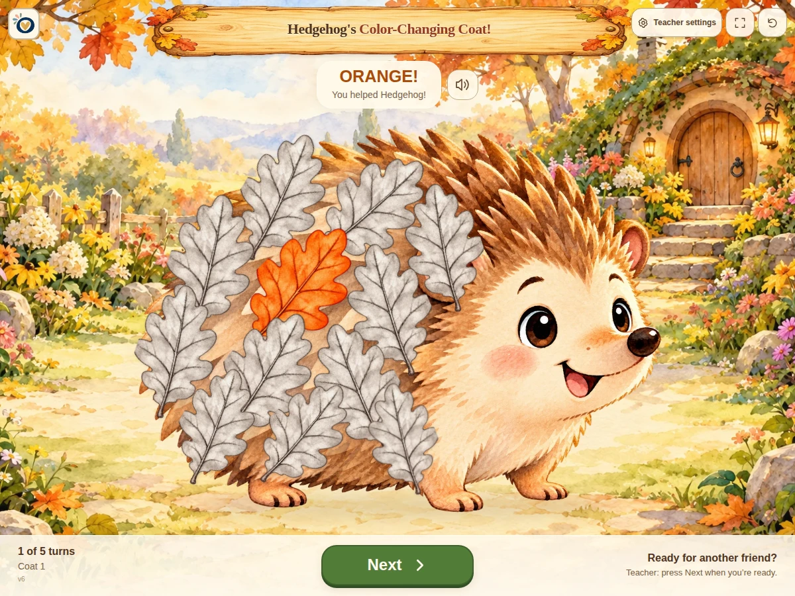

Little Play
Hedgehog's Color-Changing Coat
Choose a leaf and watch autumn appear on Hedgehog's coat.
$1.99
Ways to use it
- Take gentle turns choosing leaves to color Hedgehog's coat.
- Hear color names and color words as each leaf changes.
How to play
- Press Start when your group is ready.
- Choose a leaf and watch its autumn color appear.
- Play through every turn until a little magic finishes the coat.
Practical details
Teacher settings choose the number of turns, which autumn colors appear, whether color words show, whether color names are spoken, gentle sound effects, and narration. After each turn, the game can give a gentle direction like finding a spot or joining the line.
Explore together
Invite children to explain what they notice and talk through their choices.